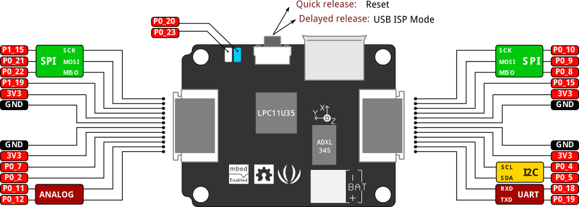
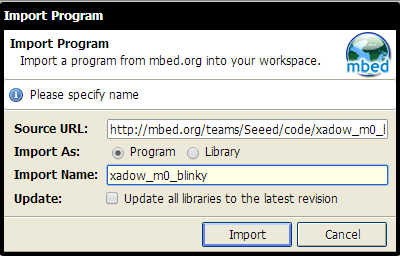
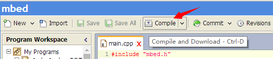

Xadow - M0
Xadow - M0 is an mbed enabled development board with Xadow form factor. Xadow is a series of flexible electronic modules including sensors, displays and etc. Several Xadow modules can be cascaded to create interactive objects.
Features
- online development tools
- easy to use C/C++ SDK
- lots of published libraries, projects
- extremely small and flexible
- cascade connection
- Drag-n-drop programming
- NXP LPC11U35 MCU
- Low power ARM Cortex-M0 Core
- 48MHz, 64KB Flash, 10KB RAM, 4KB EEPROM
- USB Device, 2xSPI, UART, I2C
- Integrated with accelerometer: ADXL345
Specification
- Work Voltage: 3.3V
- DC Current per IO pin :20mA
- Digital I/O Pins: 16
- Analog Input Channels: 2
- Operating Temperature: -20~70 ℃
- Dimensions: 25.43mm x 20.35mm
Pinout

Get Started
- Click this link to signup or login mbed, then import xadow_m0_blinky program into mbed online compiler.

- On mbed online IDE, click "Compile" (or use CTRL + D) to compile the code and download a binary file.

- Connect the board to the computer and long press the button, a USB drive named CRP DISABLD will show up.
- Delete the firmware.bin file in the CRP DISABLD drive, then copy the downloaded file to the drive.
- Quick press the button, the program will be running, an LED will be blinking.
You can open main.cpp to change the code. For example, use the following code to blink the LED every 0.1 second.
#include "mbed.h"
DigitalOut blue(P0_20);
int main() {
while(1) {
blue = 1; // Switch ON the LED.
wait(0.1); // Wait for 0.1 Seconds.
blue = 0; // Switch OFF the LED.
wait(0.1); // Wait for 0.1 Seconds.
}
}
Multifunction for on-board button
By default, the on-board button has two functions: quick press to reset, long press to enter ISP mode. We can add more functions!
For example, use multifunction_for_reset_button to get:
- single click - turn on LED1
- double click - turn on LED2
- long click - reset
- click and then power on - enter ISP mode
Programming Arch on Windows, Linux or Mac
Arch doesn't have an mbed interface. It uses USB In-System-Programming (ISP) to upgrade the firmware.
To enter the USB ISP mode, connect the Arch with your computer and long press its button, and then a disk named "CRP DISABLD" will appear.
- delete firmware.bin in the "CRP DISABLD" disk.
- copy a new firmware into the disk.
- if the disk is not mounted, mount the disk at {mnt_dir}
- dd if={new_firmware.bin} of={mnt_dir}/firmware.bin conv=notrunc
- on mac you'll need to use Terminal to run the following script to copy you're .bin file to your Arch
- dd if={new_firmare.bin} of=/Volumes/CRP\ DISABLD/firmware.bin conv=notrunc
- If you're so inclined, you can also create an Automator application to support drag-and-drop of the file to your board. Just create a "Run Shell Script" with the following command:
- dd if=$* of=/Volumes/CRP\ DISABLD/firmware.bin conv=notrunc
-
- You will also need to change the
"Pass Input" option from "to stdin" to "as arguments"--without this you will get an error "The action 'Run Shell Script' encountered an error" or "dd: no value specified for if (1)" in the log.
-
- Also, an improved form of the script is:
-
dd if="${1}" of=/Volumes/CRP\ DISABLD/firmware.bin conv=notrunc
- Which should handle spaces in the file path and only uses the first file supplied.
Resource
Copyright (c) 2008-2016 Seeed Development Limited (
www.seeedstudio.com /
www.seeed.cc)
This static html page was created from http://www.seeedstudio.com/wiki